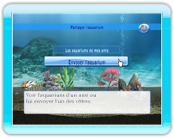

14 |
Mode de partage d'aquarium |
 |
|
Sélectionnez "Partager l'aquarium" depuis le menu principal pour accéder au mode de partage d'aquarium. Vous pouvez admirer les aquariums reçus par vos amis ou envoyer vos aquariums à des amis.
La liste des aquariums reçus par vos amis est affichée dans la boîte de réception de votre console Wii. Sélectionnez puis confirmez l'aquarium que vous désirez voir depuis la liste.
 Une liste de surnoms enregistrée dans le carnet d'adresses de votre console Wii sera affiché.
Sélectionnez un ami à qui envoyer un aquarium puis confirmez.
 Sélectionnez le numéro Sélectionnez le numérode l'aquarium que vous désirez envoyer puis appuyez sur "Envoyer".
|
 |
 |
 |